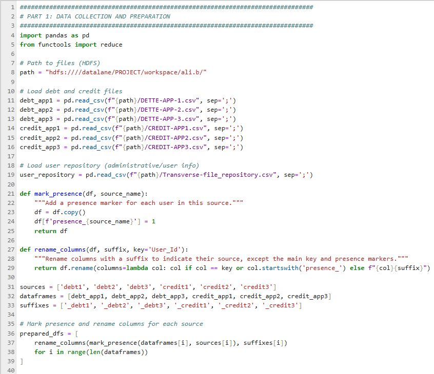
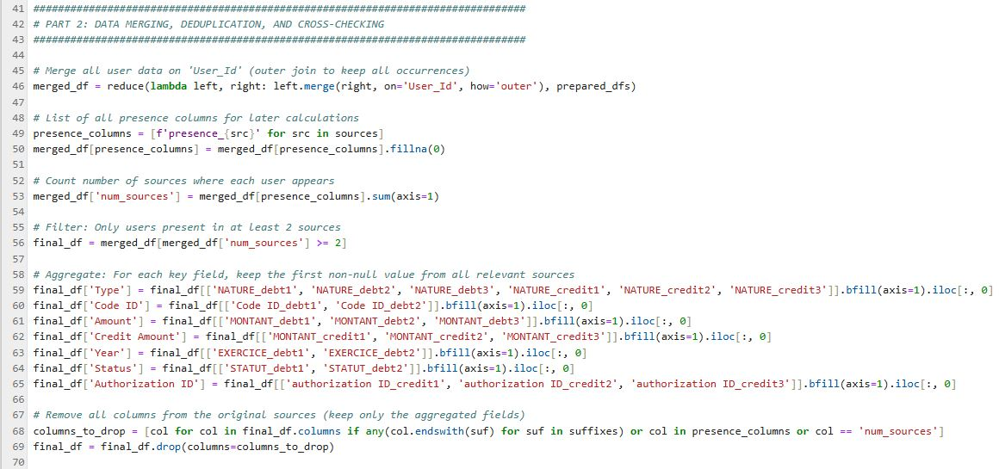
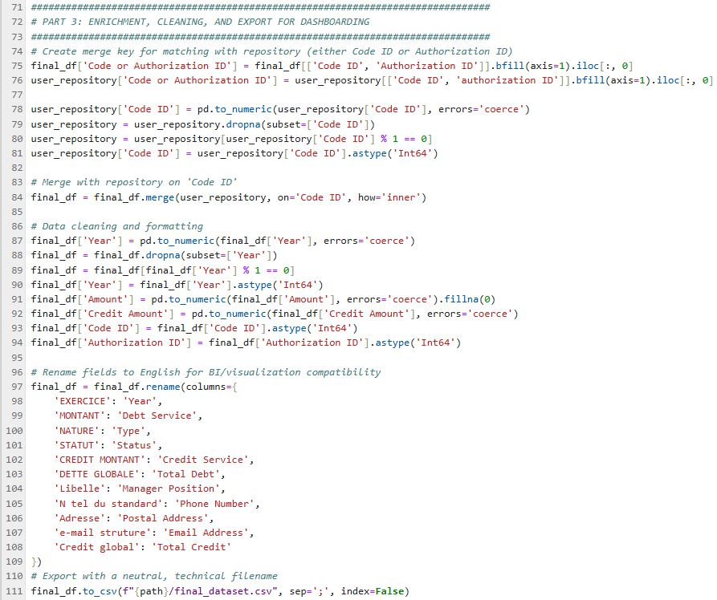
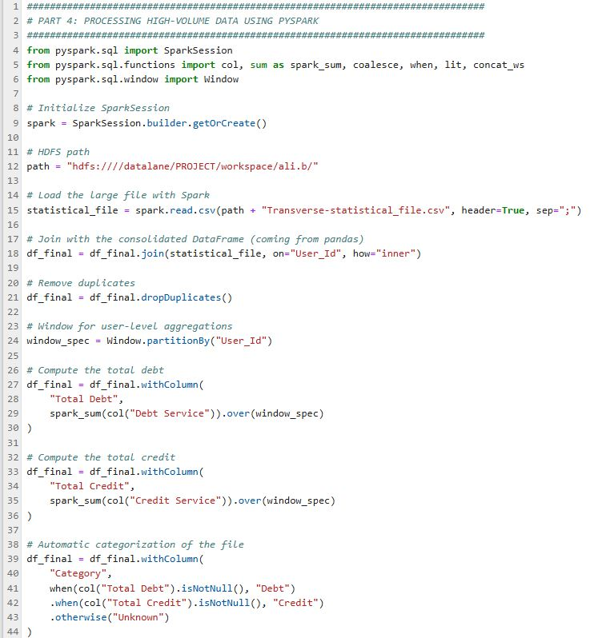

Pipeline Big Data - Croisement Données Financières
Python/PySpark • Big Data • Systèmes Financiers
Toutes les données sont fictives. Les noms de colonnes/fichiers sont inventés. Ce projet démontre l'approche technique pour le traitement de jeux de données financiers à grande échelle.
🎯 Contexte & Objectif
Challenge : Multiples applications internes générant des fichiers de dettes et crédits sur différentes zones, sans vue centralisée pour la détection d'anomalies ou l'analyse nationale.
Solution : Conception d'un pipeline Python/PySpark pour collecter, fusionner, dédupliquer, enrichir et traiter des millions de transactions depuis 6+ sources vers un jeu de données unifié pour dashboards BI.
🔄 Workflow du Pipeline
Partie 1 : Collecte & Préparation
Chargement de 6 fichiers (3 dettes + 3 crédits) de différentes applications, marquage de la présence utilisateur dans chaque source et renommage des colonnes pour éviter les collisions.
Partie 2 : Croisement & Agrégation
Fusion de toutes les sources par User_Id, création d'indicateurs multi-sources et agrégation des champs financiers clés (montants, statuts) avec logique de déduplication intelligente.
Partie 3 : Enrichissement & Export BI
Jointure avec fichiers de référence (Utilisateur, Entreprise), harmonisation des types, traduction des noms de champs en anglais et export du dataset final prêt pour intégration BI.
Partie 4 : PySpark pour Volumes Massifs
Utilisation de PySpark pour traiter les gros fichiers statistiques (trop volumineux pour pandas), réalisation de jointures distribuées, calculs window (total dettes/crédits par utilisateur) et catégorisation dynamique.

Opérations Clés :
- Jointure Spark sur User_Id pour enrichissement
- Calculs par utilisateur via Spark windows
- Reconstruction d'adresse depuis plusieurs champs
- Catégorisation Dettes/Crédits
✅ Résultats & Impact
- Dataset centralisé permettant la détection d'anomalies et actions de régularisation à l'échelle nationale
- Profilage multi-sources identifiant les utilisateurs présents dans plusieurs systèmes (signaux risque/opportunité)
- Traitement scalable avec PySpark pour des millions d'enregistrements sans limites RAM
- Export prêt BI avec noms de colonnes anglais harmonisés pour intégration dashboard
Besoin d'un Pipeline Data ?
Je peux concevoir des pipelines Python/PySpark scalables pour traiter, enrichir et consolider de gros volumes de données provenant de sources multiples.
Me Contacter